- 00 开篇词 为什么中间件对分布式架构体系来说这么重要？.md.html
- 01 中间件生态（上）：有哪些类型的中间件？.md.html
- 02 中间件生态（下）：同类型的中间件如何进行选型？.md.html
- 03 数组与链表：存储设计的基石有哪些？.md.html
- 04 红黑树：图解红黑树的构造过程与应用场景.md.html
- 05 多线程：多线程编程有哪些常见的设计模式？.md.html
- 06 锁：如何理解锁的同步阻塞队列与条件队列？.md.html
- 07 NIO：手撸一个简易的主从多Reactor线程模型.md.html
- 08 Netty：如何优雅地处理网络读写，制定网络通信协议？.md.html
- 08 加餐 中间件底层的通用设计理念.md.html
- 09 技术选型：如何选择微服务框架和注册中心？.md.html
- 10 设计原理：Dubbo核心设计原理剖析.md.html
- 11 案例：如何基于Dubbo进行网关设计？.md.html
- 12 案例：如何实现蓝绿发布？.md.html
- 13 技术选型：如何根据应用场景选择合适的消息中间件？.md.html
- 14 性能之道：RocketMQ与Kafka高性能设计对比.md.html
- 15 案例：消息中间件如何实现蓝绿？.md.html
- 16 案例：如何提升RocketMQ顺序消费性能？.md.html
- 17 运维：如何运维日均亿级的消息集群？.md.html
- 18 案例：如何排查RocketMQ消息发送超时故障？.md.html
- 19 案例：如何排查RocketMQ消息消费积压问题？.md.html
- 20 技术选型：分布式定时调度框架的功能和未来.md.html
- 21 设计理念：如何基于ZooKeeper设计准实时架构？.md.html
- 22 案例：使用分布式调度框架该考虑哪些问题？.md.html
- 23 案例：如何在生产环境进行全链路压测？.md.html
- 大咖助阵 高楼：我们应该如何学习中间件？.md.html
- 用户故事 学而时习之，不亦乐乎.md.html
- 用户故事 愿做技术的追梦人.md.html
- 用户故事 浪费时间也是为了珍惜时间.md.html
- 结束语 坚持不懈，越努力越幸运.md.html
- 捐赠
08 Netty：如何优雅地处理网络读写，制定网络通信协议？
你好，我是丁威。
上一节课，我们介绍了中间件领域最经典的网络编程模型 NIO，我也在文稿的最后给你提供了用 NIO 模拟 Reactor 线程模型的示例代码。如果你真正上手了，你会明显感知到，如果代码处理得过于粗糙，只关注正常逻辑却对一些异常逻辑考虑不足，就不能成为一个生产级的产品。
这是因为要直接基于 NIO 编写网络通讯层代码，需要开发者拥有很强的代码功底和丰富的网络通信理论知识。所以，为了降低网络编程的门槛，Netty 框架就出现了，它能够对 NIO 进行更高层级的封装。
从这之后，开发人员只需要关注业务逻辑的开发就好了，网络通信的底层可以放心交给 Netty，大大降低了网络编程的开发难度。
这节课，我们就来好好谈谈 Netty。
我会先从网络编程中通信协议、线程模型这些网络编程框架的共性问题入手，然后重点分析 Netty NIO 的读写流程，最后通过一个 Netty 编程实战，教会你怎么使用 Netty 解决具体问题，让你彻底掌握 Netty。
通信协议
如果你不从事中间件开发工作，那估计网络编程对你来说会非常陌生，为了让你对它有一个直观的认知，我给你举一个例子。
假如我们在使用 Dubbo 构建微服务应用，Dubbo 客户端在向服务提供者发起远程调用的过程中，需要告诉服务提供者服务名、方法名和参数。但这些参数是怎么在网络中传递的呢？服务提供者又怎么识别出客户端的意图呢？
你可以先看看我画的这张图：
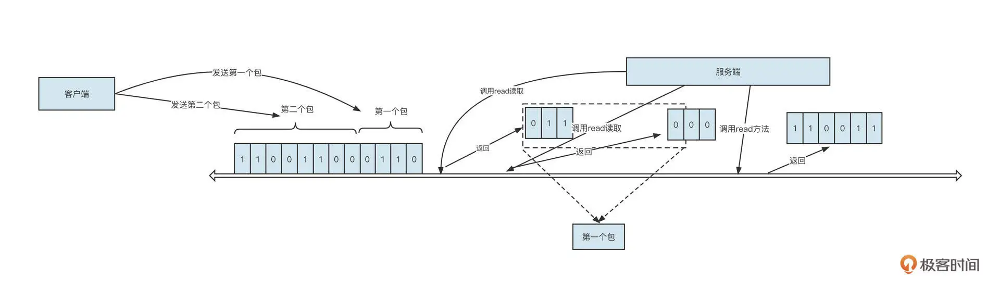
客户端在发送内容之前需要先将待发送的内容序列化为二进制流。例如，上图发送了两个包，第一个包的二进制流是 0110，第二个包的二进制流是 00110011。这时，服务端读取数据的情形可能有两种。
经过多次读取：在上面这张图中，服务端调用了 3 次 read 方法才把数据全部读取出来，分别读取到的包是 011、000、110011。
调用一次 read 就读取到所有数据：例如 011000110011。
这里我插播一个小知识，一次 read 方法能读取到的数据量，要取决于网卡中可读数据和接收缓冲区的大小。
那服务端是如何正确识别出 0110 就是第一个请求包，00110011 是第二个请求包的呢？它为什么不会将 011 当成第一个请求包，000 当成第二个请求包，110011 当成第三个包，或者直接将 011000110011 当成一个请求包呢？其实这种现象叫做粘包。
常用的解决方案是客户端与服务端共同制定一个通信规范（也称通信协议），用它来定义请求包 / 响应包的具体格式。这样，客户端发送请求之前，需要先将内容按照通信规范序列化成二进制流，这个过程称之为编码；同样，服务端会按照通信规范将收到的二进制流进行反序列化，这个过程称之为解码。
从这里你也可以看出，网络编程中通常涉及编码、往网络中写数据（Write）、从网络中读取数据（Read）、解码、业务逻辑处理、发送响应结果和接受响应结果等步骤，你可以看下下面这张图，加深理解：
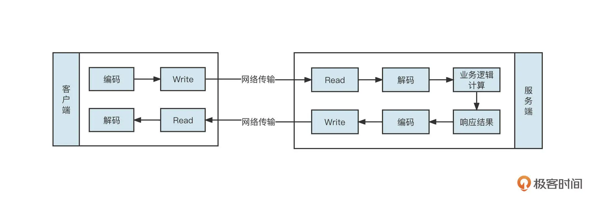
那如何制订通信协议呢？
通信协议的制订方法有很多，有的是采用特殊符号来标记一个请求的结束，但如果请求体中也包含这个分隔符就会使协议破坏，还有一种方法是使用固定长度来表述一个请求包，定义一个请求包固定包含多少字节，如果请求体内存不足，就使用填充符合进行填充，但这种方式会造成空间的浪费。
业界最为经典的协议设计方法是协议头 +Body 的设计理念，如图所示：
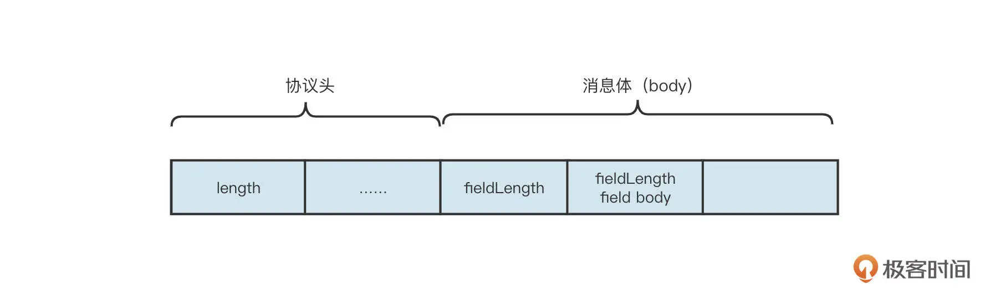
这里有几个关键点，你需要注意一下：
协议头的长度是固定的，通常为识别出一个业务的最小长度；
协议头中会包含一个长度字段，用来标识一个完整包的长度，用来表示长度字段的字节位数直接决定了一个包的最大长度；
消息体中存储业务数据。
为了更直观地给你展示，我直接以一个简单的 RPC 通信场景为例，实现类似 Dubbo 服务远程服务调用，通信协议设计如下图所示：
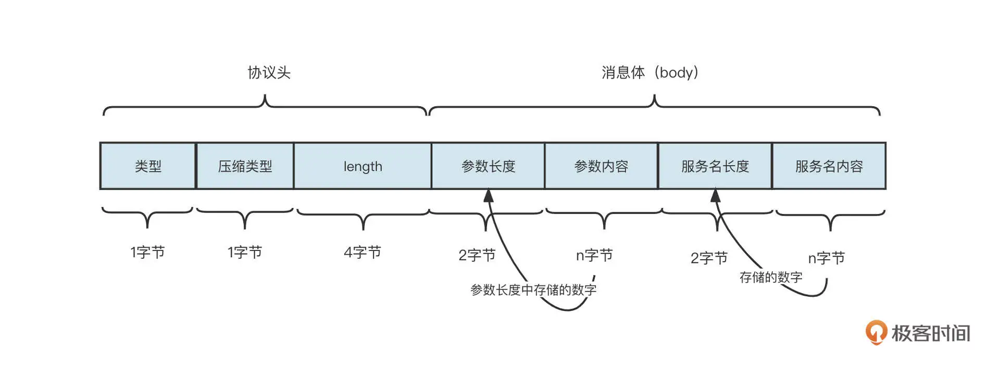
这里我们演示的是基于 Header+Body 的设计模式，接受端从网络中读取到字节后解码的流程。接受端将读取到的数据存储在一个接收缓冲区，在 Netty 中称为累积缓冲区。
首先我们要判断累积缓存区中是否包含一个完整的 Head，例如上述示例中，一个包的 Header 的长度为 6 个字节，那首先判断累积缓存中可读字节数是否大于等于 6，如果不足 6 个字节，跳过本次处理，等待更多数据到达累积缓存区。
如果累积缓存区中包含一个完整的 Header，就解析头部，并且提取长度字段中存储的数值，即包长度，然后判断累积缓存区中可读字节数是否大于或等于整个包的长度。如果累积缓存区不包含一个完整的数据包，则跳过本次处理，等待更多数据到达累积缓存区。如果累积缓存区包含一个完整的包，则按照通信协议的格式按顺序读取相关的内容。
通过上面这种方式，我们就可以完美解决粘包问题了。
我们前面也说了，网络编程中包含编码、解码、网络读取、业务逻辑等多个步骤，所以如何使用多线程提升并发度，合理处理多线程之间的高效协作就显得尤为重要，接下来我们来看一下 Netty 的线程模型是怎么做的。
Netty 的线程模型采取的是业界的主流线程模型，也就是主从多 Reactor 模型：
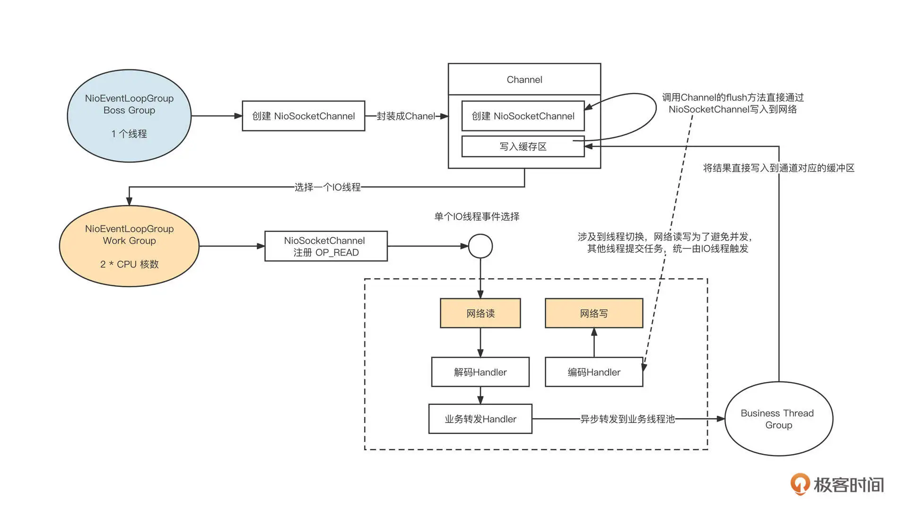
它的设计重点主要包括下面这几个方面。
- Netty Boss Group 线程组
主要处理 OP_ACCEPT 事件，用于处理客户端链接，默认为 1 个线程。当 Netty Boss Group 线程组接收到一个客户端链接时，会创建 NioSocketChannel 对象，并封装成 Channel 对象，在 Channel 对象内部会创建一个缓冲区。这个缓冲区可以接收需要通过这个通道写入到对端的数据，然后从 Netty Work Group 线程组中选择一个线程并注册读事件。
- Nettty Work Group 线程组
主要处理 OP_READ、OP_WRITE 事件，处理网络的读与写，所以也称为 IO 线程组，线程组中线程个数默认为 CPU 的核数。由于注册了读事件，所以当客户端发送请求时，读事件就会触发，从网络中读取请求，进入请求处理流程。
- 扩展机制采用责任链设计模式
编码、解码等功能对应一个独立的 Handler，这些 Handler 默认在 IO 线程中执行，但 Netty 支持将 Handler 的执行放在额外的线程中执行，实现与 IO 线程的解耦合，避免 IO 线程阻塞。
- Business Thread Group
经过解码后得到一个完整的请求包，根据请求包执行业务逻辑，通常会额外引入一个独立线程池，执行业务逻辑后会将结果再通过 IO 线程写入到网络中。
业务线程在处理完业务逻辑后，通过调用通道将数据发送到目标端。但它并不能当下直接发送，而是要将数据放入到 Channel 中的写缓存区，并向 IO 线程提交一个写入任务。这里涉及到线程切换，因为所有的读写操作都需要在 IO 线程中执行（即一个通道的 IO 操作都是同一个线程触发的），避免了多线程编程的复杂性。
说到这里，我建议你停下来，尝试用 NIO 实现 Netty 的线程模型，检验一下自己对 NIO 的掌握程度。
理解了 Netty 的线程模型，接下来我们继续学习 Netty 是怎样处理读写流程的。在进入下面的学习之前，我有几个问题希望你先思考一下：
- 如何处理连接半关闭？
- 什么时候应该注册读事件？
- 写数据之前一定要先注册写事件吗？
Netty 如何处理网络读写事件？
Netty IO 读事件由 AbstractNioByteChannel 内部类 AbstractNioUnsafe 的 read 方法实现，接下来我们就来重点剖析一下这个方法，从中窥探 Netty 是如何实现 IO 读事件的。
由于 AbstractNioUnsafe 的 read 方法代码很长，我们分步进行解读。
第一步，如果没有开启自动注册读事件，在每一次读时间处理过后会取消读事件，代码片段如下：
final ChannelConfig config = config();
if (!config.isAutoRead() && !isReadPending()) {
// ChannelConfig.setAutoRead(false) was called in the meantime
removeReadOp();
return;
}
这段代码背后蕴含的知识点是，事件注册是一次性的。例如，为通道注册了读事件，然后经事件选择器选择触发后，选择器不再监听读事件，再出来完成一次读事件后需要再次注册读事件。Netty 中默认每次读取处理后会自动注册读事件，如果通道没有注册读事件，则无法从网络中读取数据。
第二步，为本次读取创建接收缓冲区，临时存储从网络中读取到的字节，代码片段如下：
final ByteBufAllocator allocator = config.getAllocator();
final int maxMessagesPerRead = config.getMaxMessagesPerRead();
RecvByteBufAllocator.Handle allocHandle = this.allocHandle;
if (allocHandle == null) {
this.allocHandle = allocHandle = config.getRecvByteBufAllocator().newHandle();
}
创建接收缓存区需要考虑的问题是，该创建多大的缓存区呢？如果缓存区创建大了，就容易造成内存浪费；如果分配少了，在使用过程中就可能需要进行扩容，性能就会受到影响。
Netty 在这里提供了扩展机制，允许用户自定义创建策略，只需实现 RecvByteBufAllocator 接口就可以了。它又包括两种实现方式：
分配固定大小，待内存不够时扩容；
动态变化，根据历史的分配大小，动态调整接收缓冲区的大小。
第三步，循环从网络中读取数据，代码片段如下：
do {
byteBuf = allocHandle.allocate(allocator);
int writable = byteBuf.writableBytes();
int localReadAmount = doReadBytes(byteBuf);
// 省略代码
} while (++ messages < maxMessagesPerRead);
为什么要循环读取呢？为什么不一次性把通道中需要读取到的数据全部读完再继续下一个通道呢？
其实，这主要是为了避免单个通道占用太多时间，导致其他链接没有机会去读取数据。所以 Netty 会限制在一次读事件处理过程中调用底层读取 API 的次数，这个次数默认为 16 次。
接下来我们进行第四步。这里要提醒一下，第四步和第五步都是位于第三步的循环之中的。
第四步，调用底层 SokcetChannel 的 read 方法从网络中读取数据，代码片段如下：
byteBuf = allocHandle.allocate(allocator);
int writable = byteBuf.writableBytes();
int localReadAmount = doReadBytes(byteBuf);
if (localReadAmount <= 0) {
// not was read release the buffer
byteBuf.release();
byteBuf = null;
close = localReadAmount < 0;
break;
}
pipeline.fireChannelRead(byteBuf);
解释一下，首先用 writable 存储接收缓存区可写字节数，然后通过调用底层 NioSocketChannel 从网络中读取数据，并返回本次读取的字节数。
那在什么情况下读取的字节数小于 0 呢？原来，TCP 是全双工通信模型，任意一端都可以关闭接收或者写入，如果对端连接调用了关闭（半关闭），那么我们尝试从网络中读取字节时就会返回 -1，跳出循环。
然后，我们要将读取到的内容传播到事件链中，事件链中各个事件处理器会依次对这些数据进行处理。
如果你也在使用 Netty 进行应用代码开发，请特别注意 byteBuf 的释放问题。自定义的事件处理器中要尽量继续调用 fireChannelRead 方法，Netty 内置了一个 HeadContext，它在实现时会主动释放 ByteBuf。但如果自定义的事件处理器阻断了事件传播，请记得一定要释放 ByteBuf，否则会造成内存泄露。
第五步，判断是否要跳出读取：
if (totalReadAmount >= Integer.MAX_VALUE - localReadAmount) {
// Avoid overflow.
totalReadAmount = Integer.MAX_VALUE;
break;
}
totalReadAmount += localReadAmount;
// stop reading
if (!config.isAutoRead()) {
break;
}
if (localReadAmount < writable) {
// Read less than what the buffer can hold,
// which might mean we drained the recv buffer completely.
break;
}
这里需要关注的一个点是，本次读取到的字节数如果小于接收缓冲区的可写大小，说明通道中已经没有数据可读了，结束本次读取事件的处理。
第六步，完成网络 IO 读取后，进行善后操作。具体代码片段如下：
pipeline.fireChannelReadComplete();
allocHandle.record(totalReadAmount);
if (close) {
closeOnRead(pipeline);
close = false;
}
操作结束后，会触发一次读完成事件，并向整个事件链传播。这时候如果对端已经关闭了，则主动关闭链接。
就像我们在上节课提到的，事件机制触发后将失效，需要再次注册，所以 Netty 支持自动注册读事件。在每一次读事件完成后会主动调用下面这段代码实现读事件的自动注册，具体实现在 HeadContext 的 fireChannelReadComplete 方法中，代码片段如下：
public void channelReadComplete(ChannelHandlerContext ctx) throws Exception {
ctx.fireChannelReadComplete();
readIfIsAutoRead();//该方法最终会调用Channel的read方法，注册读事件
}
这里还涉及另一问题，那就是 Netty 的 channelRead、channelReadComplete 等事件是怎么传播的呢？我建议你查看我的另一篇文章《Netty4 事件处理传播机制》。
Netty 网络读流程就讲到这里了，我们用一张流程图结束网络读取部分的讲解：
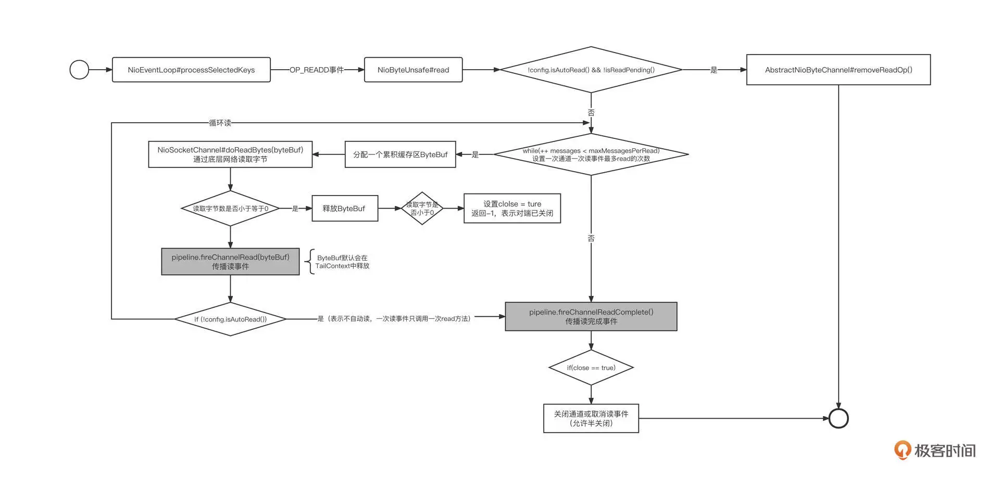
接下来，我们一起看看 Netty 的网络写入流程。
基于 Netty 网络模型，通常会使用一个业务线程池来执行业务操作，业务执行完成后，需要通过网络将响应结果提交给对应的 IO 线程，再通过 IO 线程将数据返回给客户端，其过程大致如下：
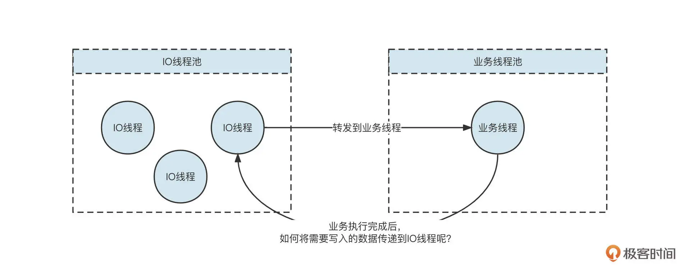
那在代码实现层面，业务线程与 IO 线程是怎么协作的呢？我们带着这个问题，继续深入研究 Netty 的网络写入流程。
在 Netty 中，一眼就能看到写事件的处理入口，也就是 NioEventLoop（IO 线程）的 processSelectedKey 方法，代码片段如下所示：
// Process OP_WRITE first as we may be able to write some queued buffers and so free memory.
if ((readyOps & SelectionKey.OP_WRITE) != 0) {
// Call forceFlush which will also take care of clear the OP_WRITE once there is nothing left to write
ch.unsafe().forceFlush();
}
查看 processSelectedKey 方法的调用链，我们看到这个方法最终会调用 AbstractUnsafe 的 flush0 方法，代码片段如下所示：
protected void flush0() {
if (inFlush0) {
return;
}
final ChannelOutboundBuffer outboundBuffer = this.outboundBuffer; // @1
if (outboundBuffer == null || outboundBuffer.isEmpty()) {
return;
}
inFlush0 = true;
// Mark all pending write requests as failure if the channel is inactive.
if (!isActive()) { // @2
try {
if (isOpen()) {
outboundBuffer.failFlushed(FLUSH0_NOT_YET_CONNECTED_EXCEPTION, true);
} else {
outboundBuffer.failFlushed(FLUSH0_CLOSED_CHANNEL_EXCEPTION, false);
}
} finally {
inFlush0 = false;
}
return;
}
try {
doWrite(outboundBuffer); // @3
} catch (Throwable t) {
if (t instanceof IOException && config().isAutoClose()) {
close(voidPromise(), t, FLUSH0_CLOSED_CHANNEL_EXCEPTION, false);
} else {
outboundBuffer.failFlushed(t, true);
}
} finally {
inFlush0 = false;
}
}
flush0 方法的核心要点主要包括下面三点。
获取写缓存队列。如果写缓存队列为空，则跳过本次写事件。每一个通道 Channel 内部维护一个写缓存区，其他线程调用 Channel 向网络中写数据时，首先会写入到写缓存区，等到写事件被触发时，再将写缓存区中的数据写入到网络中。
如果通道处于未激活状态，需要清理写缓存区，避免数据污染。
通过调用 doWrite 方法将写缓存中的数据写入网络通道中。
这里的 doWrite 方法比较重要，我们重点介绍一下。
doWrite 方法主要使用 NIO 完成数据的写入，具体由 NioSocketChannel 的 doWrite 实现，由于这一方法代码较长，我们还是分段来进行讲解。
第一步，如果通道的写缓存区中没有可写数据，需要取消写事件，也就是说，这时候不必关注写事件。具体代码如下：
int size = in.size();
if (size == 0) {
// All written so clear OP_WRITE
clearOpWrite();
break;
}
这背后的逻辑是，如果注册写事件，每次进行事件就绪选择时，只要底层 TCP 连接的写缓存区不为空，写就会就绪，它会继续通知上层应用程序可以往通道中就绪了。但这种情况下，如果上层应用无数据可写，写事件就绪就变得没有意义了。所以，为了避免出现这种情况，如果没有数据可写，建议直接取消写事件。
第二步，尝试将缓存区数据写入到网络中：
switch (nioBufferCnt) {
case 0:
super.doWrite(in);
return;
case 1:
ByteBuffer nioBuffer = nioBuffers[0];
for (int i = config().getWriteSpinCount() - 1; i >= 0; i --) {
final int localWrittenBytes = ch.write(nioBuffer);
if (localWrittenBytes == 0) {
setOpWrite = true;
break;
}
expectedWrittenBytes -= localWrittenBytes;
writtenBytes += localWrittenBytes;
if (expectedWrittenBytes == 0) {
done = true;
break;
}
}
break;
default:
for (int i = config().getWriteSpinCount() - 1; i >= 0; i --) {
final long localWrittenBytes = ch.write(nioBuffers, 0, nioBufferCnt);
if (localWrittenBytes == 0) {
setOpWrite = true;
break;
}
expectedWrittenBytes -= localWrittenBytes;
writtenBytes += localWrittenBytes;
if (expectedWrittenBytes == 0) {
done = true;
break;
}
}
break;
}
也就是说，这一步要根据缓存区中的数据进行区分写入，各个分支的情况有所不同：
如果缓存区 nioBufferCnt 的个数为 0，说明待写入数据为 FileRegion（Netty 零拷贝实现关键点），需要调用父类 NIO 相关方法完成数据写入。
如果数据是 Buffer 类型，且只有 1 个，则直接调用父类的 doWrite 方法，它的底层逻辑是基于 NIO 通道写入数据。
如果数据是 Buffer 类型而且有多个，那就要使用 NIO Gather 机制了，这可以避免数据复制。
写入端的处理逻辑也是差不多的。我们可以通过底层 NIO SocketChannel 的 write 方法将数据写入到 Socket 缓存区，有三种情况需要分别考虑。
如果返回值为０，表示 Socket 底层的缓存区已满，需要暂停写入。具体做法是，注册写事件，等 Socket 底层写缓存区空闲后再继续写入。
如果写缓存区的数据写入到了网络，那就需要取消注册写事件，避免毫无意义的写事件就绪。
如果写缓存区中的数据很大，为了避免单个通道对其他通道的影响，默认设置单次写事件最多调用底层 NIO SocketChannel 的 write 方法的次数为 16。
第三步，如果底层缓存区已写满，重新注册写事件；如果需要写入的数据太多，则需要创建一个 Task 放入到 IO 线程中，待就绪事件处理完毕后继续处理。代码片段如下：
if (!done) {
// Did not write all buffers completely.
incompleteWrite(setOpWrite);
break;
}
protected final void incompleteWrite(boolean setOpWrite) {
// Did not write completely.
if (setOpWrite) {
setOpWrite();
} else {
// Schedule flush again later so other tasks can be picked up in the meantime
Runnable flushTask = this.flushTask;
if (flushTask == null) {
flushTask = this.flushTask = new Runnable() {
@Override
public void run() {
flush();
}
};
}
eventLoop().execute(flushTask);
}
}
注意，这里是处理写入的第二个触发点。将写入请求添加到 IO 线程的任务列表中，就可以继续执行数据写入。也就是说，并不一定要注册写事件才能进行写入。
Task 的触发点在 NioEventLoop 的 run 方法，代码片段如下：
if (ioRatio == 100) {
try {
processSelectedKeys();
} finally {
// Ensure we always run tasks.
runAllTasks();
}
} else {
final long ioStartTime = System.nanoTime();
try {
processSelectedKeys();
} finally {
// Ensure we always run tasks.
final long ioTime = System.nanoTime() - ioStartTime;
runAllTasks(ioTime * (100 - ioRatio) / ioRatio);
}
}
其中，processSelectedKeys 就是 NIO 事件的就绪执行入口。IO 线程在执行完事件就绪选择后，会继续执行任务列表中的任务。
在实际开发中，通常是在完成业务逻辑后，往网络中写入数据，调用 Channel 的 writeAndFlush 方法。在 Channel 内部会分别调用 write 和 flush 方法。write 方法是将数据写入到通道（Channel）对象的写缓存区，而调用 flush 方法是将通道缓存中的数据写入到网络（Socket 的写缓存区），继而通过网络传输到接收端。
Netty 为了避免 IO 线程与多个业务线程之间的并发问题，业务线程不能直接调用 IO 线程的数据写入方法，只能是向 IO 线程提交写入任务，具体代码定义在 AbstractChannelHandlerContext 的 write 方法中。
private void write(Object msg, boolean flush, ChannelPromise promise) {
AbstractChannelHandlerContext next = findContextOutbound();
EventExecutor executor = next.executor();
if (executor.inEventLoop()) {
if (flush) {
next.invokeWriteAndFlush(msg, promise);
} else {
next.invokeWrite(msg, promise);
}
} else {
AbstractWriteTask task;
if (flush) {
task = WriteAndFlushTask.newInstance(next, msg, promise);
} else {
task = WriteTask.newInstance(next, msg, promise);
}
safeExecute(executor, task, promise, msg);
}
}
为了方便你深入阅读 Netty 相关源码，我还给你整理了 Netty 写入的流程图：

Netty 编程实战
好了，关于 Netty 网络读写的理解就介绍到这里了，但是只有理论是不行的，在这节课的最后，我们来看一个 Netty 的实战案例。
Netty 通常会用在中间件开发、即时通信（IM）、游戏服务器、高性能网关服务器等领域，阿里巴巴的高性能消息中间件 RocketMQ 就是用 Netty 进行网络层开发的。
为了方便你学习，我将 RocketMQ 网络层代码单独抽取成了一个网络编程框架，并上传到了GitHub，你可以拷贝下来跟我一起操作。
在深入 RocketMQ 网络层具体实践之前，我们先来看一下 RocketMQ 的网络交互流程：
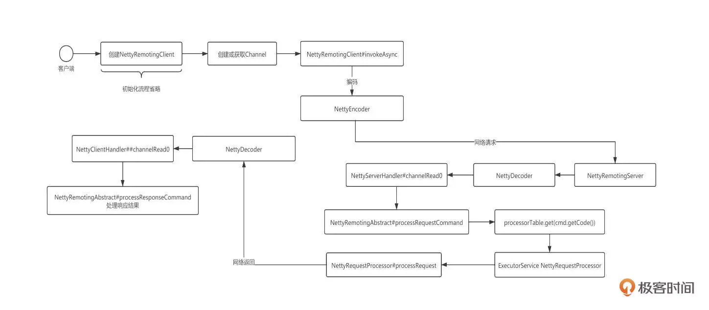
基于 Netty 进行网络编程，我们通常需要编写客户端代码、服务端代码和通信协议。
我们先来看 Netty 客户端编程的通用示例：
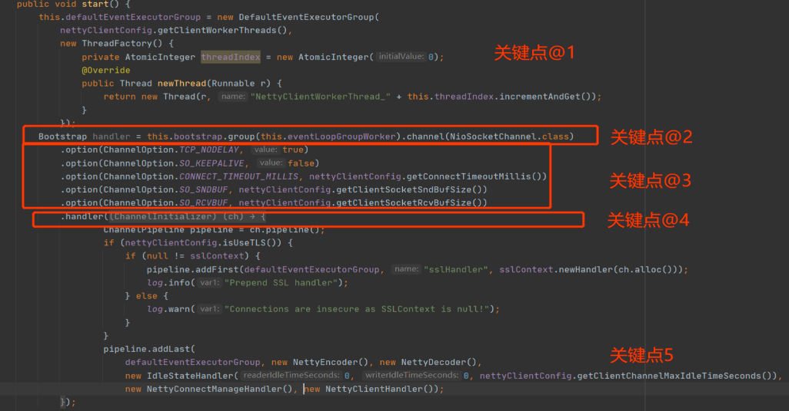
这里我们需要注意五个关键点。
- 需要创建 Handler 执行线程池，让 IO 线程只负责网络读写，而且创建线程池一定要使用线程工厂，同时要记得为线程命名。
- 使用 Bootstrap 的 Group 方法指定 Work 线程组。
- 通过 Option 方法设置网络参数。
- 通过 Handler 方法创建事件调用链。
- 将编码、解码、业务逻辑处理相关的事件处理器加入到事件执行链条。
再来看一下客户端如何创建连接，其代码片段如下：
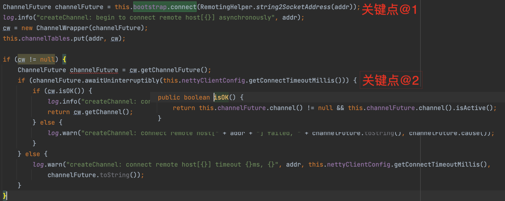
客户端通过调用 Bootstrap 的 connect 方法尝试与服务端建立连接，该方法会立即返回一个 Future 而无须等待连接建立，所以该方法调用结束后并不一定成功创建了连接。但是连接只有在创建成功之后才能被用来发送和读取数据，所以这里我们需要再调用 Future 对象的 awaitUninterruptibly 方法等待连接成功建立。
客户端与服务端建立连接后，就可以通过连接向服务端发送请求了：
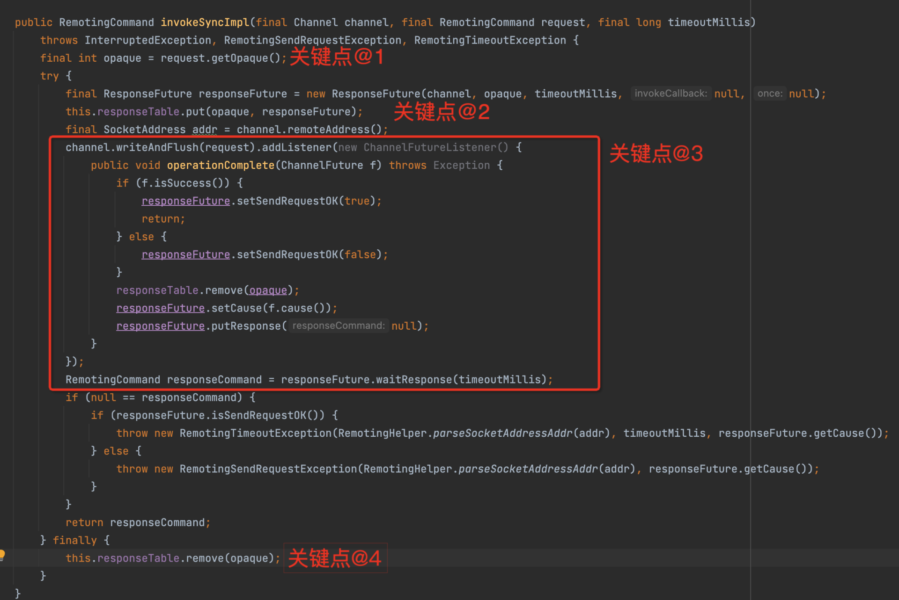
这里主要有四个实现要点。
- 为每一个请求创建一个唯一的请求序号。也就是为每一个请求创建一个响应结果 Future，并建立 RequestId 到响应结果的映射 Map，这样在收到服务端响应结果时，就可以准确地知道具体是哪一个请求的结果了。这是多线程共同使用单一连接发送请求的核心要点。为了更进一步理解，你可以再看一下这张示意图：
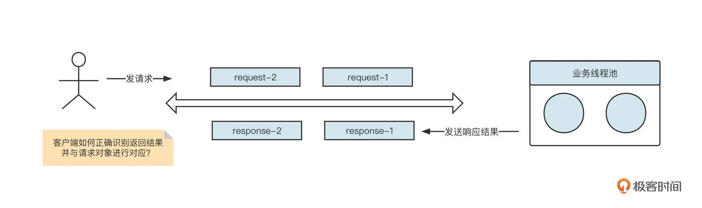
通过调用 Channel 的 writeAndFlush 方法，将数据写入到网络中。也就是说，不需要在发送数据之前先注册写事件。然后基于 Future 模式添加事件监听器，在收到返回结构后，ResponseFuture 中的状态会被更新。
同步发送的实现模板，通过调用 ResponseFuture 获取等待结果，如果使用异步发送模式，就在第三步执行用户定义的回调函数。
处理完一个请求后，删除 requestId-ResponseFuture 的映射关系。
介绍完客户端编程范例后，接下来我们看一下如何使用 Netty 编写服务端程序。
首先，创建相关线程组，代码片段如下：
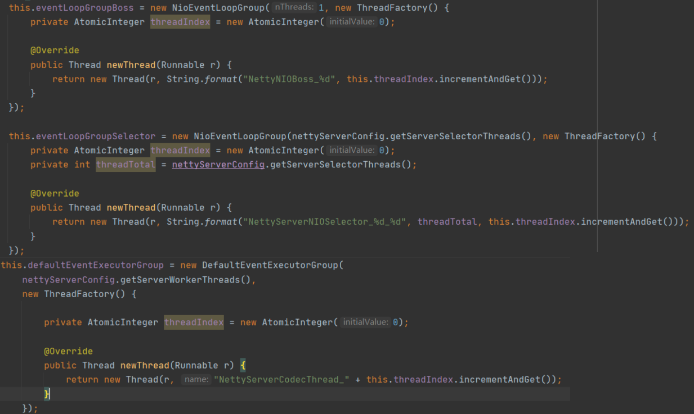
这里分别创建了 3 个线程组。
eventLoopGroupBoss 线程组，默认使用 1 个线程，对应 Netty 线程模型中的主 Reactor。
eventLoopGroupSelector 线程组，对应 Netty 线程模型中的从 Reactor 组，俗称 IO 线程池。
defaultEventExecutorGroup 线程组，在 Netty 中，可以为编解码等事件处理器单独指定一个线程池，从而使 IO 线程只负责数据的读取与写入。
下一步，使用 Netty 提供的 ServerBootstrap 对象创建 Netty 服务端，示例代码如下所示：
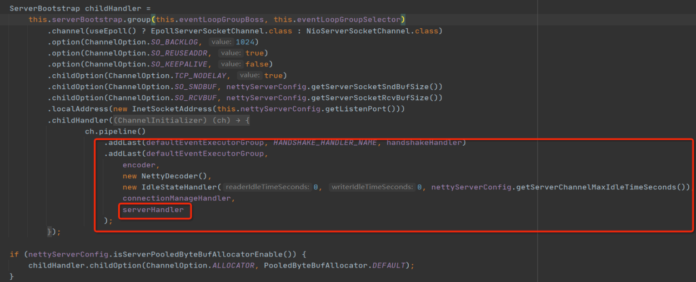
上面的代码基本都是模版代码，少数不同点就是需要自己实现编码器、解码器和业务处理 Handler。其中，编码器、解码器其实就是实现通信协议，而 ServerHandler 就是服务端业务处理器。
再下一步，服务端在指定接口建立监听，等待客户端连接：
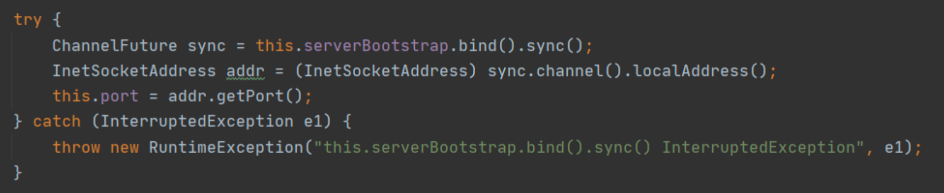
ServerBootstrap 的 bind 方法是一个非阻塞方法，调用 sync() 方法会变成阻塞方法，它需要等待服务端启动完成。
最后一步就是编写服务端业务处理 Handler 了：
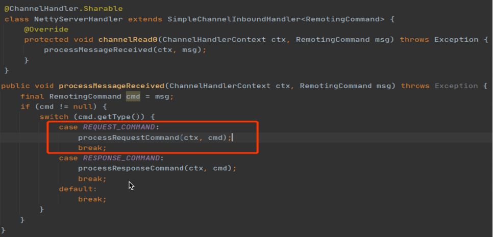
服务端处理器需要接收客户端请求，所以通常需要实现 channelRead 事件。通常业务 Handler 是在解码器之后执行，所以业务 Handler 中 channelRead 方法接收到的参数已经是通信协议中定义的具体模型，也就是请求对象了。后面就是根据该请求对象中的内容，执行对应的业务逻辑了。业务 Handler 会在 defaultEventExecutorGroup 线程组中执行，为了提高解码的性能，避免业务逻辑与 IO 操作相互影响，通常会将业务执行派发到业务线程池。
总结
好了，这节课就讲到这里。
这节课，我们从一个简单的 RPC 请求 - 响应模式说起，串起了网络编程中编码、网络写、网络传输、网络读取、解码、业务逻辑执行等步骤，并引出了网络粘包问题，最终通过制定通信协议解决了粘包问题。
通信协议看似是一个非常高大上的名词，它其实是一种发送端和接收端共同制定的通信格式。我在这里介绍了一种通用的设计方法：Header(请求头) + Body（消息体）的经典设计方法。
接下来，我们还讲解了 Netty 的线程模型，也是主从多 Reactor 模型。但我们要知道业务 Handler 默认是在 IO 线程池中执行的，我们改变这种行为，让 Handler 在一个独立的线程池中执行，主要是为了提升 IO 线程的执行效率。
在讲解 Netty 读写流程之前，我给你提了下面几个问题。只有真正理解了这些问题，才能算是真正理解了 NIO 编程。在这里，我也给出我的答案，你可以对照思考一下。
- 如何处理连接半关闭？
在调用 SocketChannel 方法的 read 方法时，如果其返回值为 -1，则表示对端已经关闭了连接，接受端也需要同样关闭连接，释放相关资源。
- 什么时候应该注册读事件？
接受端通常在创建好 NioSocketChannel 后就应该注册读事件。这样才能接受发送端的数据，如果服务端感觉到有压力时，可以暂时取消关注读事件，达到限流的效果。
- 写数据之前一定要先注册写事件吗？
写数据之前不需要注册写事件，写事件一般是底层 NioSocketChannel 的底层缓存区满了，无法再往网络中写入数据时，再注册通道的写事件，等待缓冲区空闲时通知应用程序继续将剩余数据写入到网络中。
在课程的最后，我们以消息中间件 RocketMQ 是如何使用 Netty 开发网络通信模块，进行 Netty 网络编程实战，做到理论与实践相结合。
Netty 是一个庞大的体系，如果你想进一步提升高并发编程能力，我建议你体系化地学习一下它，我也非常推荐这本《Netty 源码分析与实战 - 网络通道篇》，希望可以让你在学习 Netty 的过程中少走一些弯路。
课后题
学完这节课，你应该已经掌握了 NIO 的读写处理过程，那我也给你留一道课后题。
请你尝试重构[上节课]的代码：实现一个简易的 RPC Request-Response 模型，确保这个模型支持同步请求、异步请求两种请求发送模式。
如果你想要分享你的代码想听听我的意见，可以提交一个 [GitHub]的 push 请求或 issues，并把对应地址贴到留言里。我们下节课见！
© 2019 - 2023 Liangliang Lee. Powered by gin and hexo-theme-book.